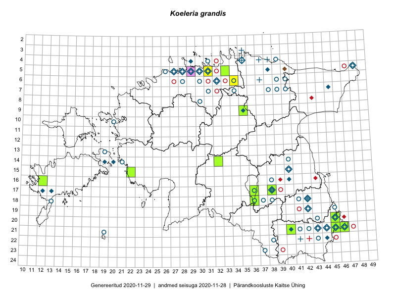

Koeleria grandis
Uuendatud: 2016-12-02
Kaardile koondatud taksonid: Koeleria grandis Besser ex Gorski

Kaart põhineb 8 kirjel, neist vaatlusi 5 ja eksemplare 3. Taksonit on leitud 6 ruudust.
Viited andmebaasikirjetele
- Rein Kalamees, Kersti Püssa: 2015-08-11: 21-46: ala
- Jana-Maria Habicht, Ester Valdvee, Kirke Pilvik, Anu Nurk: 2015-07-30: 09-35: ala
- Helle Mäemets: 2015-07-01: 17-36: ala
- Kersti Püssa, Rein Kalamees: 2015-07-16: 21-45: ala
- Jaak-Albert Metsoja, Mari Metsoja: 2016-06-14: 20-45: ala
- Peedu Saar, Thea Kull: 2015-06-17: 17-38: GPS punkt
- Jana-Maria Habicht: 2015-07-30: 09-35: GPS punkt
- Jana-Maria Habicht: 2015-07-30: 09-35: GPS punkt